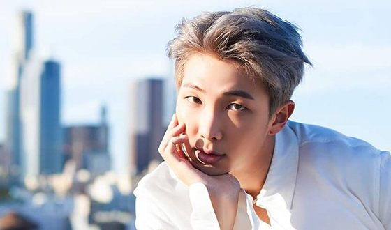

Команда BTS
Ким Намджун! Ким Сокджин! Мин Юнги! Чон Хосок! Пак Чимин! Ким Тэхён! Чон Чонгук! BTS!


Ким Нам Джун (он же RM)
Лидер группы, рэпер, автор песен.
Родился в городе Сеуле 12 сентября 1994 года. Высокий и стройный парень. Его вес – 67 кг, а рост – 181 см. Есть младшая сестра Ким Чен Мин.
Одно время жил с родителями в Новой Зеландии и Соединенных Штатах. Хорошо знает английский язык.
Основное хобби — баскетбол.
На кастинге ему трудно давались танцы и хореография. Но со временем смог преодолеть себя. Сейчас прекрасно двигается!
Саб-вокалист и лицо группы.
Родился в городе Аньян 4 декабря 1992 года. Самый старший участник коллектива.
Его вес — 60 кг, рост — 179 см. Есть старший брат Ким СокДжун. Вместе с ним открыли ресторан под названием "Ossu Seiromushi" недалеко от озера Сокчон.
Джин в детстве мечтал быть детективом. Получил водительские права.
Не хотел быть музыкантом, сперва ему сложно было на сцене. До сих пор считает, что ему нужно больше работать над собой.
Джин знает китайский и английский языки. Но владеет ими не в совершенстве.
Своим кумиром считает Топа из Big Bang.
Любит есть, и очень неплохо готовит 😊. Мечтает найти девушку с кулинарными способностями.
Ведущий рэпер.
Самый бледнолицый из всех участников бойз-бенда.
Юнги родился в городе Тэгу 9 марта 1993 года. Его вес — 54 кг, а рост — 176 см. Есть старший брат Мин Чон Ки.
Любимый цвет — белый.
Любит рифмовать, придумывать песни, создавать фотографии. Всё время ломает голову над тем, что ему написать в Твиттер.
Когда нервничает, переходит на диалект своего города.
Умён и знает ответ почти на любой вопрос.
Очень любит выступления, на репетициях выкладывается по полной. Но в жизни чрезвычайно ленив.
Полюбил рэп и стал им заниматься благодаря группе Epik High.
Близко дружит с Чимином. Они постоянно прикалываются и подшучивают друг над другом.
Рэпер, саб-вокалист, танцор.
Родился в городе Кванджу 18 февраля 1994 года.
Его вес — 65 кг, а рост — 177 см. Имеет спортивное телосложение, хотя не любит физических нагрузок.
Есть старшая сестра (на 4 года) Чон Давон
Любимый цвет — зелёный.
Близко знаком с двумя мемберами из группы B.A.P — Ендже и Джело. С Ендже он прослушивался в одной из крупнейшей в ЮжнойКорее звукозаписывающей студии. С Джело учился в одной академии.
Среди его увлечений — «Лего». Обожает продукцию Apple.
Очень аккуратный — всегда убирает за собой.
Божественно танцует, поэтому является ведущим танцором в группе. Его пример для подражания — GD из Big Bang.
Джей Хоуп предпочитает умных девушек с длинными волосами. Любит общаться с ними, спорить на разные темы.
Вокалист, танцор. Последним вступил в группу BTS.
Решил не брать псевдоним — выступает под собственным именем.
Родился в городе Пусане 13 октября 1995 года. Есть младший брат Пак Джи Хён.
Любимые цвета – синий и черный.
Мечтает станцевать с Каем из EXO, поэтому постоянно тренируется в танцах.
Родился в один год с Ви и считает его лучшим другом.
Саб-вокал.
Родился в городе Тэгу 30 декабря 1995 года. Есть младшие сестра Ким Чон Гю и брат Ким Ын Джин. Его вес – 58 кг, а рост – 176 см.
Есть вредные привычки — грызть ногти и высовывать язык.
В «ТОП100 самых красивых мужчин» в 2017 году занял 1 место.
Состоял в группе с самого начала. Но увидели его с выходом дебютного клипа BTS.
Ценит в своём отце ум, разносторонние интересы, заботу о родных и близких. Поэтому Ви мечтает быть похожим на него.
Рэпер, танцор и вокалист.
Самый младший участник группы — макне. Выступает без псевдонима.
Родился в городе Пусане 1 сентября 1997 года. Его вес – 66 кг, а рост – 178 см. Есть старший брат Чон Чон Хён.
В группу попал благодаря Ким Нам Джуну.
Его хобби – рисование.
Пример для подражания для Чонгука — GD из группы Big Bang.
Любимый цвет – чёрный.